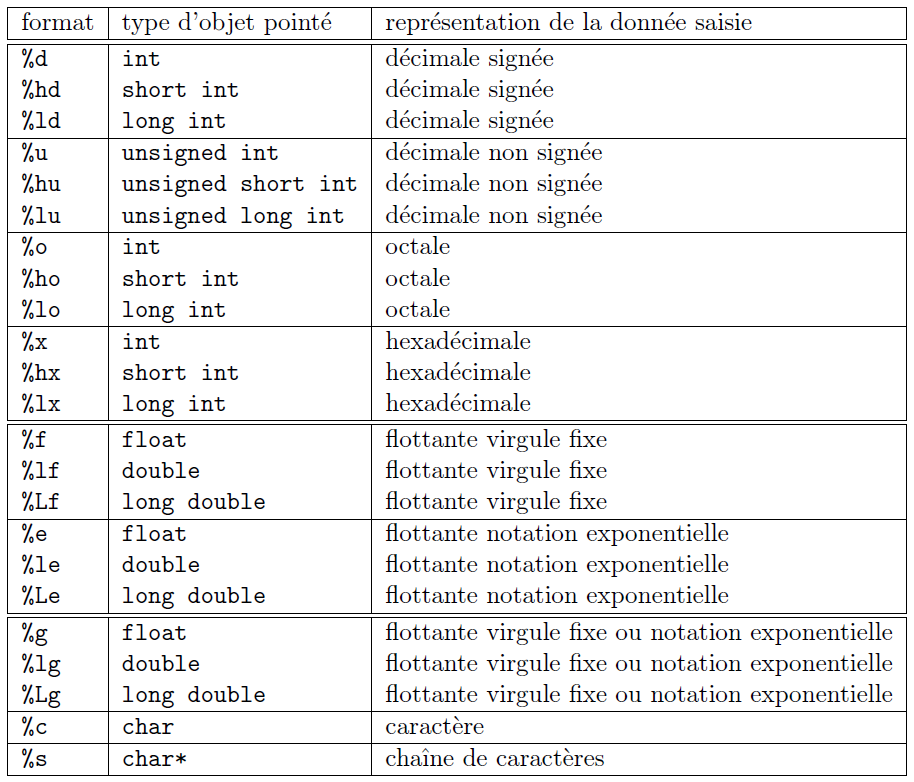
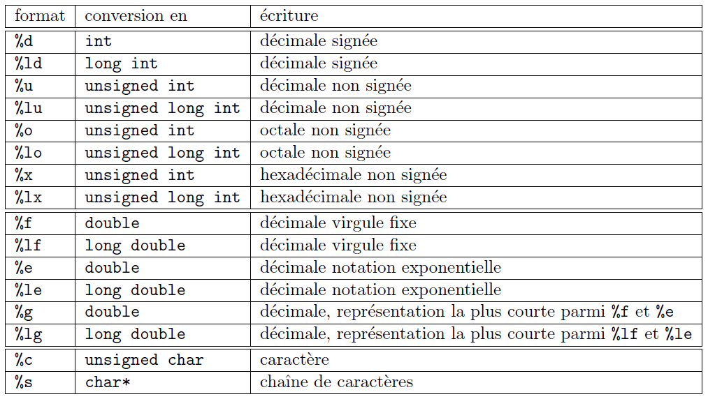

6. Entrées-sorties
Les fonctions d'entrées-sorties du langage C sont définies dans la librairie standard stdio.h. Elles sont utilisées avec les unités classiques d'entrées-sorties, qui sont respectivement le clavier et l'écran.
Nous ne présenterons dans ce chapitre que les fonctions classiques d'entrées-sorties, c'est-à-dire les plus fréquemment utilisées. Pour voir les autres fonctions d'entrées-sorties définies par C, veuillez consulter la librairie stdio.h.
Fonctions de lecture
-
getchar
int getchar (void)La fonction getchar permet de lire des caractères. Elle retourne un int correspondant au caractère lu. Lorsqu'elle détecte la fin de fichier, elle retourne l'entier EOF (End Of File), valeur définie dans la librairie stdio.h. En général, la constante EOF vaut -1.
Le code suivant lit et traite les caractères lus à l'entrée standard jusqu'à la fin de fichier.
int c;while ((c = getchar()) != EOF) {// traitement du caractère c}Remarquez que ce programme déclare de type int (et non char) la variable destinée à recevoir un caractère lu par getchar. Cette recommandation est liée au type char qui peut être signé ou non selon le compilateur C utilisé (cf. types de base). L'utilisation du type signé int permet ainsi d'assurer la détection de fin de fichier.
-
fgets
char *fgets (char *s, int size, FILE *stream)La fonction fgets lit une ligne (jusque et y compris le caractère de fin de ligne '\n') sur le flot stream et stocke les caractères lus dans le tableau s, avec un maximum de size caractères (deux places supplémentaires sont prévues dans le tableau s pour stocker le caractère de fin de ligne lu, ainsi que le caractère '\0' ajouté par la fonction elle-même). Si l'utilisateur a introduit une ligne plus longue, la suite de la ligne sera lue lors de l'appel suivant de la fonction fgets. La fonction renvoie ligne, i.e. l'adresse du tableau de caractères, ou NULL si une erreur ou la fin du fichier a été rencontrée.
Le code suivant permet de lire des lignes à l'entrée standard jusqu'à la fin de fichier.
char ligne[257];while (fgets(ligne, 257, stdin) != NULL) {// traitement de la chaîne ligne}Pour plus d'informations concernant cette fonction, consultez la section traitement des chaînes de caractères.
-
scanf
int scanf (const char *format, ...)La fonction scanf est une fonction de lecture formatée. Elle permet de saisir des données au clavier et de les stocker aux adresses spécifiées par les arguments de la fonction. Rappelez-vous en effet qu'en C, les paramètres étant passés par valeur, la seule manière pour qu'une fonction modifie leurs valeurs est de fournir les adresses des variables à la fonction. Les paramètres de scanf doivent dès lors être des pointeurs.
La fonction renvoie le nombre de données correctement lues et assignées. Elle retourne EOF si la fin des données est atteinte avant qu'une première conversion correcte ait pu être réalisée ou en cas d'erreur de lecture.
La chaîne format indique le format dans lequel les données lues sont converties. Elle ne contient pas d'autres caractères (notamment pas de '\n'). Les conversions de format sont spécifiées par un caractère précédé du signe %.
Les formats valides pour la fonction scanf sont listés dans le tableau suivant.
Les données numériques à entrer au clavier doivent être séparées par des caractères blancs (white spaces, i.e. espace, tabulation, saut à la ligne, etc.). Les caractères blancs dans le format signifient que tous les caractères blancs qui se présentent seront sautés lors de la lecture. On peut également fixer le nombre de caractères de la donnée à lire. Par exemple %3s pour une chaîne de 3 caractères, %10d pour un entier qui s'étend sur 10 chiffres, signe inclus.
Voici quelques exemples d'utilisation de scanf:
int a,b;scanf("%d", &a); // lecture d'un entierscanf("%x", &a); // lecture d'un entier sous forme hexadecimale; ex: entrer la valeur 1a donnera a=26scanf("(%d,%d)", &a, &b); // lecture de deux entiers séparés par une virgule et encadrés par une paire de parenthèses// ex: (22,33) ou ( 22, 33) avec des blancs, mais uniquement devant les nombresscanf(" (%d ,%d )", &a, &b); // comme ci-dessus mais avec une syntaxe tolérant les blancs partoutchar car;scanf("%c", &car); // lecture d'un caractèrescanf("%d %c", &a, &car); // lecture d'un nombre entier et du premier caractère non blanc le suivant
Fonction d'écriture
-
printf
int printf (const char *format, ...)La fonction printf est une fonction d'impression formatée, ce qui signifie que les données sont converties selon le format particulier choisi.
La chaîne format contient le texte à afficher et les spécifications de format correspondant à chaque expression de la liste. Les spécifications de format ont pour but d’annoncer le format d'affichage des données. Elles sont introduites par le caractère %, suivi d'un caractère désignant le format d'impression.
Les formats d'impression valides pour la fonction printf diffèrent légèrement de ceux de la fonction scanf. Ils sont donnés dans le tableau suivant:
En plus du caractère donnant le type des données, on peut éventuellemnt préciser certains paramètres du format d'impression, qui sont spécifiés entre le % et le caractère de conversion dans l’ordre suivant:
- largeur minimale du champ d'impression: %10d spécifie qu'au moins 10 caractères seront réservés pour imprimer l'entier, en introduisant éventuellement des espaces pour respecter le format. Par défaut, la donnée sera cadrée à droite du champ mais un signe - avant le format cadrera la donnée à gauche du champ (ex: %-10d).
- précision: %.12f signifie qu'un flottant sera imprimé avec 12 chiffres après la virgule. De même %10.3f signifie que l'on réserve 13 caractères (incluant le caractère .) pour imprimer le flottant et que 3 d'entre eux sont destinés aux chiffres après la virgule. Lorsque la précision n'est pas spécifiée, elle correspond par défaut à 6 chiffres après la virgule. Pour une chaîne de caractères, la précision correspond au nombre de caractères imprimés: %30.5s signifie que l'on réserve un champ de 30 caractères pour imprimer la chaîne mais que seulement les 5 premiers caractères seront imprimés (suivis de 25 blancs).
Voici quelques exemples d'utilisation de printf:
int a = 7, b = 3;printf("La multiplication de %d par %d vaut %d.\n",a,b,a*b); // affiche: La multiplication de 7 par 3 vaut 21.float x = 123.456;printf("<%f>", x); // affiche: >123.456001<printf("<%.0f>", x); // affiche: >123<printf("<%12.2f>", x); // affiche: > 123.46<char *s = "ABCDEFG";int l = -10, p = 5;printf("<%s>", s); // affiche: >ABCDEFG<printf("<%10s>", s); // affiche: > ABCDEFG<printf("<%*.*s>", l, p, s); // affiche: > ABCDE<Remarquez dans le dernier exemple que la largeur du champ peut être indiquée par le caractère * à la place d'un nombre. Elle est alors définie par la valeur de l'argument correspondant dans la liste, qui doit être de type entier. Il en est de même pour la spécification de la précision.